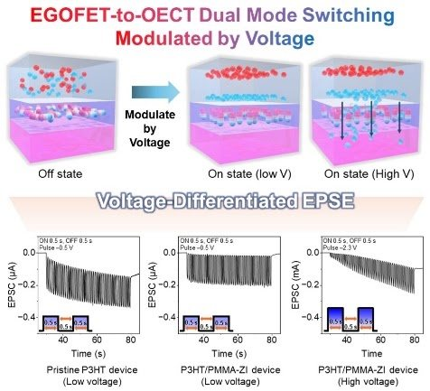
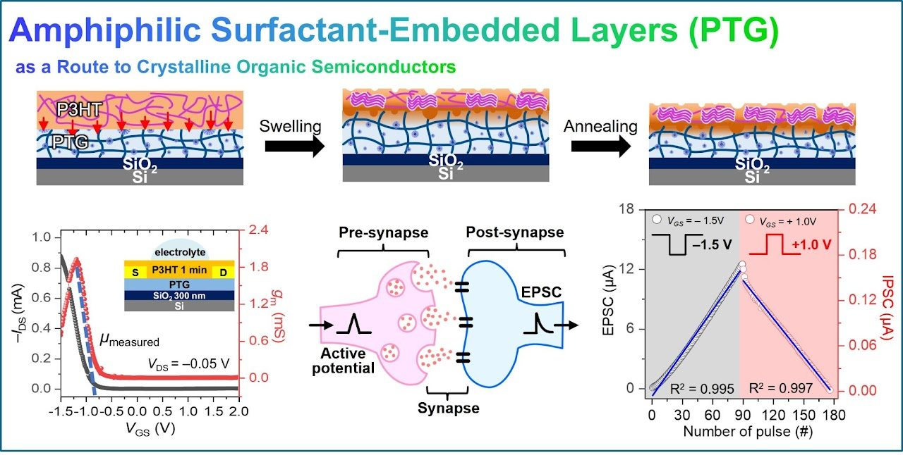
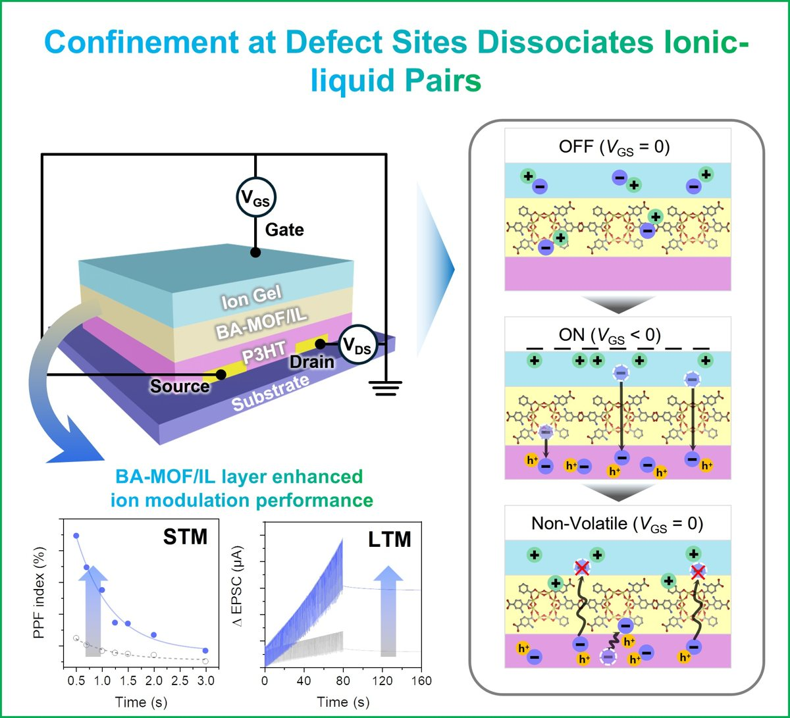
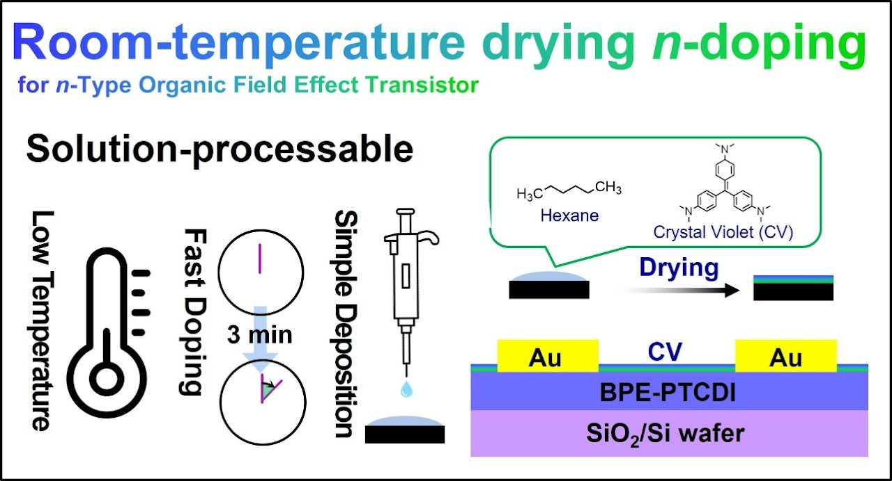

Where two materials touch, energy levels align, dipoles form, and charges and ions are exchanged. We design interlayers that steer these events and decide how a device behaves.
서로 다른 물질이 맞닿는 곳에서 에너지 준위가 정렬하고 쌍극자가 생기며 전하와 이온이 오갑니다. 우리는 이 과정을 조절하는 계면층을 설계합니다.
Representative paper
S. B. Woo, Y. Kim, Y. K. Kim, S. H. Lee, D. H. Hwang, E. K. Lee*, “Zwitterion-Modified PMMA Interlayers for Reliable Dual-Mode Organic Neuromorphic Devices,” ACS Appl. Mater. Interfaces 18, 19380–19392 (2026). DOI: 10.1021/acsami.6c02631

How molecules pack decides how charges move. We guide crystallization and chain alignment of organic semiconductors with soft templates, solvents, and interlayers.
분자가 어떻게 쌓이느냐가 전하의 움직임을 결정합니다. 우리는 부드러운 주형·용매·계면층으로 유기반도체의 결정화와 사슬 정렬을 이끕니다.
Representative paper
J. H. Song, Y. Kim, H. Yoo, E. K. Lee*, “Kinetic swelling-driven PTG interlayers for enhanced crystallinity and charge transport in polymer OECTs,” J. Mater. Chem. C 13, 17801–17812 (2025). DOI: 10.1039/d5tc01098e

Ions and dopants travel into soft solids such as ion gels, hydrogels, and conjugated polymers. Controlling where and how fast they move gives devices memory and the ability to learn.
이온과 도펀트는 이온겔·하이드로겔·전도성 고분자 같은 부드러운 고체 속으로 이동합니다. 이 이동을 제어하면 소자에 기억과 학습 능력이 생깁니다.
Representative paper
C. M. Lee, H. J. Son, Y. An, J. U. Kim, H. Yoo, S. Ga, C. S. Lee, E. K. Lee*, “Confinement at Defect Sites Dissociates Ionic-Liquid Pairs for Brain-Like Organic Computing,” Small 22, e73608 (2026). DOI: 10.1002/smll.73608

Thermodynamics and kinetics lie underneath doping, drying, and swelling. Understanding them turns trial and error into design rules — for example, stable n-type doping by room-temperature drying.
도핑·건조·팽윤 아래에는 열역학과 반응속도론이 있습니다. 이를 이해하면 시행착오가 설계 원리가 됩니다. 예: 상온 건조로 얻는 안정한 n-형 도핑.
Representative paper
D. E. Lee, J. H. Oh, E. K. Lee*, “Enhancing Stability of n-Type Doped Organic Semiconductors through Low Boiling Point Solvent-Assisted Room Temperature Drying,” ACS Appl. Mater. Interfaces 16, 51221–51228 (2024). DOI: 10.1021/acsami.4c08461